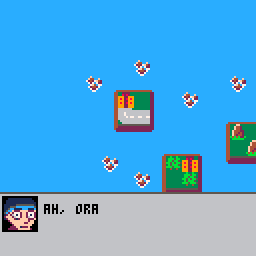
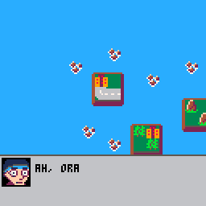
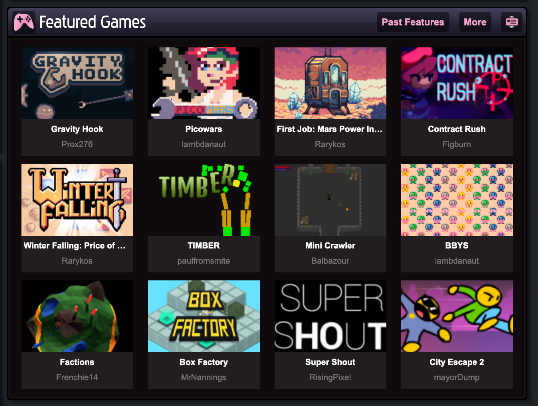
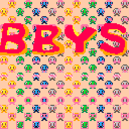

My Projects
Picowars
An 8-bit homage to the Advance Wars series by Nintendo. Made in PICO-8 using Lua for programming.
 

Picowars was featured along with BBYS on the front page of Newgrounds.com with largely favorable reviews.

BBYS
An 8-bit game made for the Ludum Dare 46 Jam. PICO-8 using Lua for programming.
